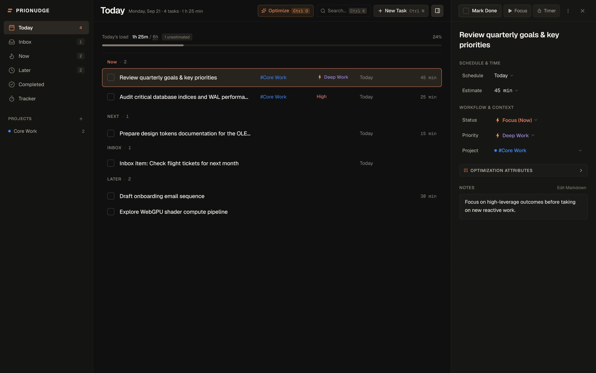
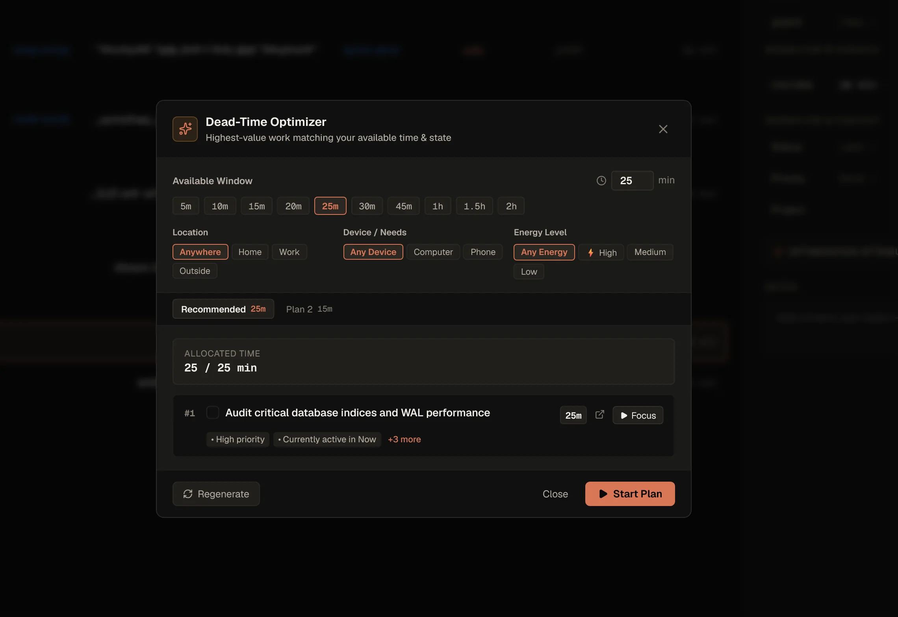
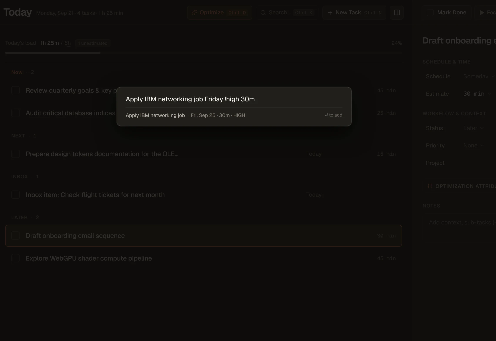
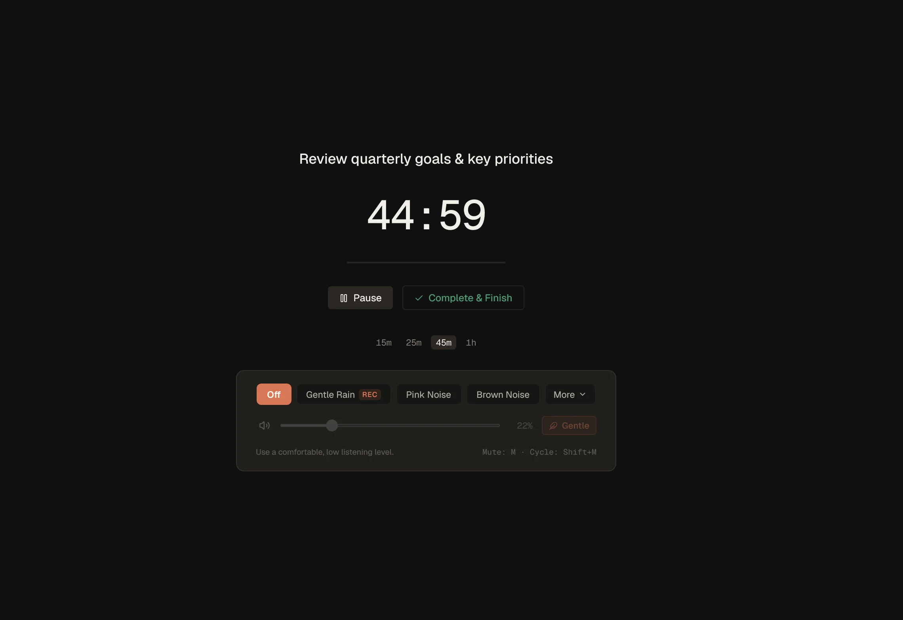

Decide less
Now, Next, Inbox and Later are separate states, not one endless list. Everything doesn’t become equally urgent, and the next thing is already chosen.
Windows desktop app
PrioNudge combines tasks, priorities, time estimates, context and lightweight tracking to reduce the friction of deciding what deserves your attention next.
v0.1.12 · Recurring tasks Free download Local-first No account required MSI installer

The work isn’t organizing tasks. The work is doing them. PrioNudge is designed to keep the deciding small.
Now, Next, Inbox and Later are separate states, not one endless list. Everything doesn’t become equally urgent, and the next thing is already chosen.
Estimates, focus sessions and a lightweight activity tracker make your real workload visible — not just your task count.
Quick Capture, keyboard shortcuts and tray controls keep capturing and finishing work from interrupting the work itself.
Product story
Not a hundred features. Just the parts that remove a decision.
Tell PrioNudge how much time you have, where you are and how much energy you’ve got. It ranks what fits and builds one plan you can start immediately.

Press Ctrl+Alt+Space from anywhere on Windows. Dates, priorities, recurrence and estimates are extracted so you can get back to work.

Pick a duration, start the session and let everything else fade back. Focus mode keeps the current task in front of you until you’re done.

Daily routines, weekdays, weekly work and monthly tasks can recreate themselves as each occurrence is completed, while completed occurrences remain part of history.
Built for Windows
PrioNudge installs like any other Windows program and runs in its own window. Nothing to keep open in a tab, nothing to sign into, nothing leaving your machine.
Your tasks live in a local SQLite database on your machine. No account, no sync service, no server.
New versions download and install themselves after the update signature is verified.
Ctrl+K for commands, Ctrl+N to capture, J/K to move, 1/2/3 to reprioritise.
Control focus sessions, track progress, and trigger Quick Capture directly from the system tray.
Timed tasks can nudge you with native Windows notifications, even while PrioNudge is minimized or sitting in the tray.
v0.1.12 Windows 10 & 11 Free download All releases